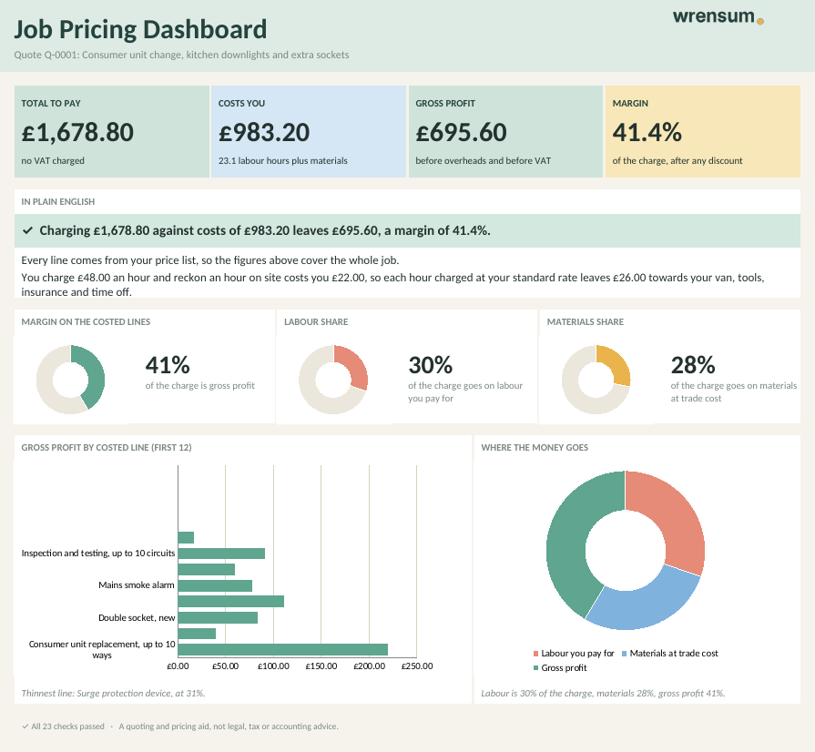
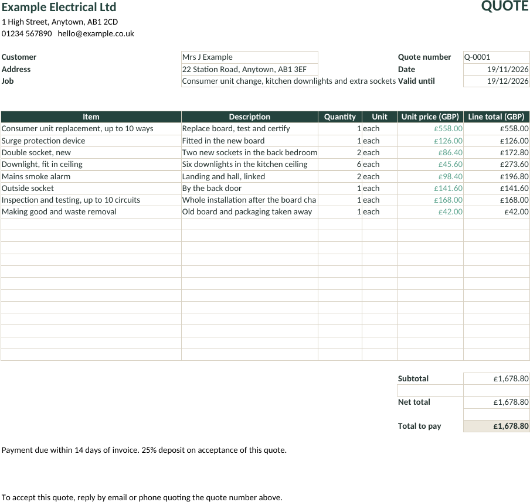
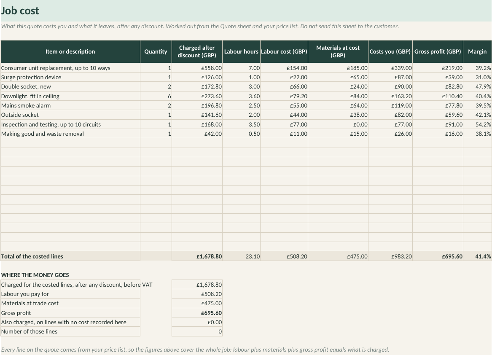
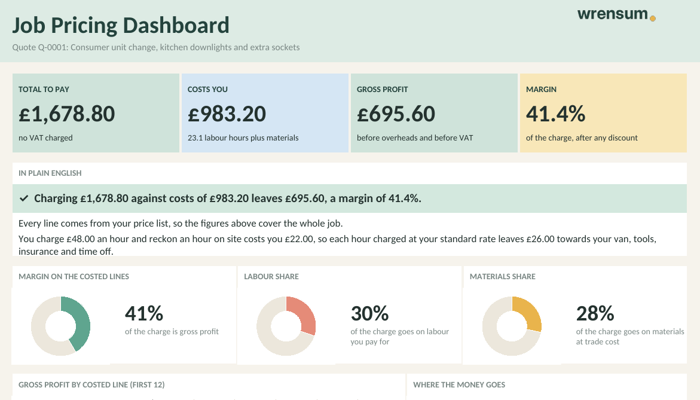

Electrician's Quote and Job Pricing Template
Set your hourly rate and your materials mark-up once. Pick the jobs you are doing from your own price list and the quote prices itself, ready to print. A second sheet, which the customer never sees, shows what the job costs you and what it leaves.
Buy for £9One-off payment. One Excel file (.xlsx), delivered as a download. A quoting and pricing aid: it is not legal, tax or accounting advice.

What you get
- A price list of 50 jobs, with twenty electrical ones filled in as examples: consumer unit change, sockets, downlights, cooker and shower circuits, EV charge point, smoke alarms, inspection and testing, fault finding
- Each price built from two figures you set: the labour hours the job takes and what the materials cost you at trade
- A materials mark-up added for you, at the percentage you choose
- A printable quote of up to 20 lines: pick the item and the unit, the price and the unit fill in themselves
- A discount row that only appears when you give one, and a VAT row that only appears if you are VAT registered
- A job cost sheet that shows, line by line, what you charged, what the work costs you and the margin it leaves
- The discount carried through to the costing, so the margin is the one you are actually getting
- A dashboard, in light and dark, that says in plain English what the job leaves and warns when a job is priced below cost
- A certificate checklist to track the paperwork for the job, which you can edit
- A sheet of 23 checks that looks for common slips: an item renamed on the price list, two items with the same name, a quantity typed as text, a discount entered as 10 instead of 10%, a total typed over
Who it is for
Self-employed electricians and small electrical firms in the UK who quote for domestic and small commercial work and want to know what each job leaves, not just what it bills. You need Microsoft Excel.
How to use it
- In Settings, enter your business details, the hourly rate you charge, what an hour on site costs you, and your materials mark-up.
- On the Price list, type over the example jobs with your own: the unit, the labour hours and the trade cost of the materials.
- On the Quote sheet, enter the customer and pick the jobs from the drop-down. The unit and the price fill in.
- Look at the Dashboard to see what the job leaves before you send the quote, then print the Quote sheet or save it as a PDF.



Questions
- What is the difference between the two hourly figures?
- One is the rate you charge, which goes on the quote. The other is what an hour on site costs you: your own pay, or what you pay someone else. The gap between them is what pays for the van, the tools, insurance and the days you are not on site. The file keeps them apart so the margin it shows is a real one.
- Does it work out my tax or my VAT return?
- No. If you tell it you are VAT registered it adds VAT to the quote at the rate you set, and if you are not, the quote does not mention VAT at all. It works out no tax and sends nothing to HMRC.
- Can I charge a one-off price for something not on my price list?
- Yes. Leave the Item box empty and type the description, the quantity and the price. The quote totals it like any other line. The job cost sheet cannot know what that line costs you, so it leaves it out of the cost and says so rather than guessing.
- What happens if I rename something on my price list?
- Any saved quote using the old name loses its price and goes blank, and the Checks sheet tells you which line and why. It does not quietly drop that line to nothing, which is what would make you send a wrong quote.
- Does it tell me which certificate my job needs?
- No. The Certificates sheet is a reminder list you can edit, with a note of what each document is usually for. Which ones your job needs depends on the work, where it is and the scheme you belong to. Part P of the Building Regulations is England; Wales, Scotland and Northern Ireland have their own regulations. The sheet names its GOV.UK sources and the date they were read.
- Does it do certificates themselves, or testing?
- No. It does not produce an Electrical Installation Certificate or any test results. It is for pricing the work and keeping track of the paperwork, not for issuing it.
- What do I need to open it?
- Microsoft Excel. The file has also been tested in LibreOffice Calc. It contains no macros.
- Are the prices in it real?
- No. Every rate, labour time and materials cost in the file is invented, to show the format. Type over them with your own figures, which is the whole point of the file.
- How was it made?
- It was built with the help of AI, like everything on this site, and then checked: it recalculates with no errors, it has 23 checks of its own, and an independent set of 400-odd tests works out every figure a second way before release.
Free to use first
The markup and margin calculator shows the price to charge to hit a margin, and the day rate calculator works out what to charge for a day when you work for yourself.
Other tools
If you price bigger jobs in stages, the Builders Job Pack (£29) estimates a job, bills it in stages and tracks extras. For a general quote without the job costing, see the Quote Builder (£8).